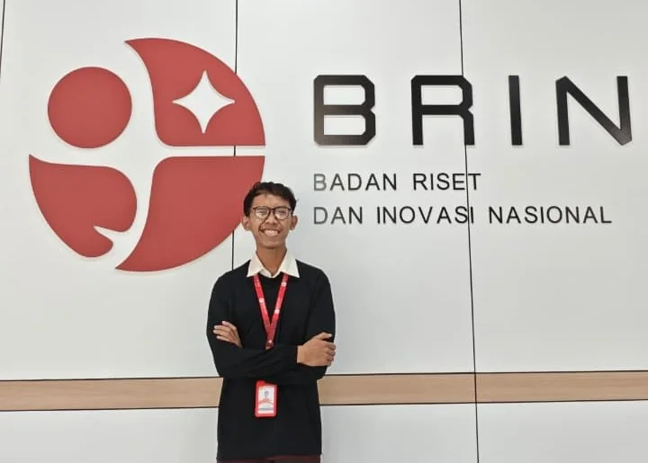

JUL–AUG 2026 · RESEARCH
Quantum Physics Research Intern — BRIN
Research internship at BRIN's Quantum Physics Research Center. Worked in a quantum-computing research context, including exploration of Quantum Phase Estimation and Variational Quantum Eigensolver topics. This was quantum research, not aerospace research.